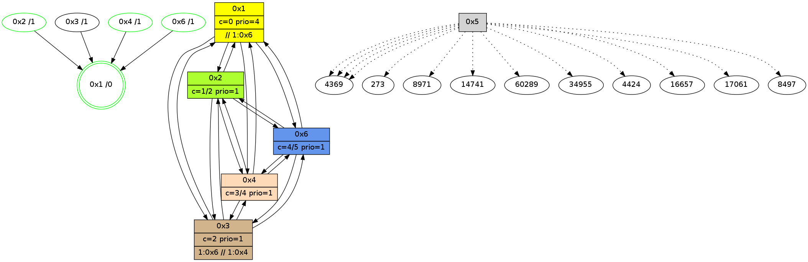

>> << IDX [start] -100 -25 -5 +0 +5 +25 +100 [825.000337124]
 Previous packets
----------------------------------------------------------------------
820.001843 beacon01(adaf) #0 coord=01,02,05,03,04,06 cycle=432.0ms assoc
-- color-indic=1 64 40 f2
820.011804 beacon02(adaf) #0 coord=01,02,05,03,04,06 cycle=432.0ms assoc 64 11 0d
820.021806 beacon05(adaf) #0 coord=01,02,05,03,04,06 cycle=432.0ms assoc 64 b7 27
820.031804 beacon03(adaf) #0 coord=01,02,05,03,04,06 cycle=432.0ms assoc 64 2b 03
820.041805 beacon04(adaf) #0 coord=01,02,05,03,04,06 cycle=432.0ms assoc 64 8d 29
820.051805 beacon06(adaf) #0 coord=01,02,05,03,04,06 cycle=432.0ms assoc 64 f9 35
820.063318 [Hello(1): seq=523 sym=2,3,4,6 sysInfo=hasWarning,coloring-mode-on,ColoringModeRequestCalled stat=2:1,3,0,1/3:0,0,0,0/4:13,11,10,2/6:12,7,9,0]
820.065988 [Hello(4): seq=624 sym=2,6,1,3 sysInfo=hasWarning,coloring-mode-on,ColoringModeIndicationCalled stat=2:2,7,5,2/6:2,2,1,0/1:7,15,11,1/3:12,4,4,2]
820.068920 [Hello(3): seq=622 sym=2,4,6 asym=1 sysInfo=hasWarning stat=2:14,5,5,2/4:13,3,4,2/6:3,11,15,10/1:2,0,6,1]
820.070845 [Color(4) seq=50 @0:0 color=3 prio=1 >1.@6 >>1.@6 c=0,1;2]
----------------------------------------------------------------------
820.493951 beacon01(adaf) #0 coord=01,02,05,03,04,06 cycle=432.0ms assoc
-- color-indic=1 64 84 9d
820.503911 beacon02(adaf) #0 coord=01,02,05,03,04,06 cycle=432.0ms assoc 64 d5 62
820.513912 beacon05(adaf) #0 coord=01,02,05,03,04,06 cycle=432.0ms assoc 64 73 48
820.523911 beacon03(adaf) #0 coord=01,02,05,03,04,06 cycle=432.0ms assoc 64 ef 6c
820.533912 beacon04(adaf) #0 coord=01,02,05,03,04,06 cycle=432.0ms assoc 64 49 46
820.543912 beacon06(adaf) #0 coord=01,02,05,03,04,06 cycle=432.0ms assoc 64 3d 5a
820.556121 [Color(6) seq=50 @0:0 color=4/5 prio=1 c=0,1,2;3]
820.557704 [Color(1) seq=51 @0:0 color=0 prio=4 >1.@6 >>1.@6 c=1,2;3]
820.561887 [Hello(2): seq=1114 sym=6,4,1,3 sysInfo=coloring-mode-on,ColoringModeIndicationCalled stat=6:0,3,9,3/4:4,7,6,2/1:8,14,10,1/3:7,3,4,0]
820.565651 [Color(2) seq=50 @0:0 color=1 prio=1 >1.@6 >>1.@6 c=0,2,3]
----------------------------------------------------------------------
820.986062 beacon01(adaf) #0 coord=01,02,05,03,04,06 cycle=432.0ms assoc
-- color-indic=1 64 a1 a0
820.996023 beacon02(adaf) #0 coord=01,02,05,03,04,06 cycle=432.0ms assoc 64 f0 5f
821.006023 beacon05(adaf) #0 coord=01,02,05,03,04,06 cycle=432.0ms assoc 64 56 75
821.016024 beacon03(adaf) #0 coord=01,02,05,03,04,06 cycle=432.0ms assoc 64 ca 51
821.026024 beacon04(adaf) #0 coord=01,02,05,03,04,06 cycle=432.0ms assoc 64 6c 7b
821.036024 beacon06(adaf) #0 coord=01,02,05,03,04,06 cycle=432.0ms assoc 64 18 67
821.047756 [Hello(3): seq=623 sym=2,4,6 asym=1 sysInfo=hasWarning stat=2:15,6,5,2/4:13,4,4,2/6:3,11,15,10/1:2,1,6,1]
821.050208 [Hello(1): seq=524 sym=2,3,4,6 sysInfo=hasWarning,coloring-mode-on,ColoringModeRequestCalled stat=2:2,4,0,1/3:0,0,0,0/4:14,12,10,2/6:13,7,9,0]
821.052391 [STC(1) #0.74 new-neigh,tree-change,inconsistent-stability,stable,to-color d=0]
821.054159 [Hello(4): seq=625 sym=2,6,1,3 sysInfo=hasWarning,coloring-mode-on,ColoringModeIndicationCalled stat=2:3,8,5,2/6:2,2,1,0/1:8,0,11,1/3:12,4,4,2]
821.057930 [Color(4) seq=51 @0:0 color=3 prio=1 >1.@6 >>1.@6 c=0,1;2]
----------------------------------------------------------------------
821.478172 beacon01(adaf) #0 coord=01,02,05,03,04,06 cycle=432.0ms assoc
-- color-indic=1 64 65 cf
821.488131 beacon02(adaf) #0 coord=01,02,05,03,04,06 cycle=432.0ms assoc 64 34 30
821.498133 beacon05(adaf) #0 coord=01,02,05,03,04,06 cycle=432.0ms assoc 64 92 1a
821.508134 beacon03(adaf) #0 coord=01,02,05,03,04,06 cycle=432.0ms assoc 64 0e 3e
821.518133 beacon04(adaf) #0 coord=01,02,05,03,04,06 cycle=432.0ms assoc 64 a8 14
821.528134 beacon06(adaf) #0 coord=01,02,05,03,04,06 cycle=432.0ms assoc 64 dc 08
821.539679 [STC(3)->1 #0.74 to-color d=1]
821.541769 [Hello(2): seq=1115 sym=6,4,1,3 sysInfo=coloring-mode-on,ColoringModeIndicationCalled stat=6:0,3,9,3/4:5,8,6,2/1:9,14,11,1/3:7,3,4,0]
821.544265 [STC(6)->1 #0.74 new-neigh,tree-change,inconsistent-stability,stable,to-color d=1]
821.546632 [STC(2)->1 #0.74 new-neigh,tree-change,inconsistent-stability,stable,to-color d=1]
821.548380 [Color(1) seq=52 @0:0 color=0 prio=4 >1.@6 >>1.@6 c=1,2;3]
821.550019 [Color(2) seq=51 @0:0 color=1 prio=1 >1.@6 >>1.@6 c=0,2,3]
821.557034 [Color(6) seq=51 @0:0 color=4/5 prio=1 c=0,1,2;3]
----------------------------------------------------------------------
821.970279 beacon01(adaf) #0 coord=01,02,05,03,04,06 cycle=432.0ms assoc
-- color-indic=1 64 29 7f
821.980240 beacon02(adaf) #0 coord=01,02,05,03,04,06 cycle=432.0ms assoc 64 78 80
821.990240 beacon05(adaf) #0 coord=01,02,05,03,04,06 cycle=432.0ms assoc 64 de aa
822.000240 beacon03(adaf) #0 coord=01,02,05,03,04,06 cycle=432.0ms assoc 64 42 8e
822.010240 beacon04(adaf) #0 coord=01,02,05,03,04,06 cycle=432.0ms assoc 64 e4 a4
822.020242 beacon06(adaf) #0 coord=01,02,05,03,04,06 cycle=432.0ms assoc 64 90 b8
822.031431 [Hello(1): seq=525 sym=2,3,4,6 sysInfo=hasWarning,coloring-mode-on,ColoringModeRequestCalled stat=2:2,5,0,1/3:0,0,0,0/4:15,13,10,2/6:13,8,9,0]
822.034109 PARSE ERROR************************
Traceback (most recent call last):
File "PacketAnalysis.py", line 167, in showOperaPacket
structPacket = OperaPacketParse.parsePacket(rawPacket)
File "../../pkg-python/HipSens/Core/OperaPacketParse.py", line 461, in parsePacket
return parseHelloMessage(data)
File "../../pkg-python/HipSens/Core/OperaPacketParse.py", line 125, in parseHelloMessage
struct.unpack("!H",linkList[:2])[0])
error: unpack requires a string argument of length 2
48 20 04 00 02 72 00 02 02 08 02 00 06 00 01 00 03 00 53 04 00 16 00 00 4c 08 26 94 02 32 1b 18 25 4d 4d 1e
822.037232 [Color(4) seq=52 @0:0 color=3/4 prio=1 c=0,1,4;2]
822.040976 [Hello(3): seq=624 sym=2,4,1,6 sysInfo=hasWarning stat=2:0,7,6,2/4:14,5,4,2/1:3,2,7,1/6:3,12,0,10]
----------------------------------------------------------------------
822.462387 beacon01(adaf) #0 coord=01,02,05,03,04,06 cycle=432.0ms assoc
-- color-indic=1 64 ed 10
822.472348 beacon02(adaf) #0 coord=01,02,05,03,04,06 cycle=432.0ms assoc 64 bc ef
822.482348 beacon05(adaf) #0 coord=01,02,05,03,04,06 cycle=432.0ms assoc 64 1a c5
822.492348 beacon03(adaf) #0 coord=01,02,05,03,04,06 cycle=432.0ms assoc 64 86 e1
822.502348 beacon04(adaf) #0 coord=01,02,05,03,04,06 cycle=432.0ms assoc 64 20 cb
822.512349 beacon06(adaf) #0 coord=01,02,05,03,04,06 cycle=432.0ms assoc 64 54 d7
822.523836 [Color(1) seq=53 @0:0 color=0 prio=4 >>1.@6 c=1,2,4;3]
822.526102 [Hello(2): seq=1116 sym=6,4,1,3 sysInfo=hasWarning,coloring-mode-on,ColoringModeIndicationCalled stat=6:0,4,9,3/4:6,9,6,2/1:10,14,11,1/3:7,3,5,0]
822.528211 [Color(6) seq=52 @0:0 color=4/5 prio=1 c=0,1,2;3]
822.531001 [Color(2) seq=52 @0:0 color=1/2 prio=1 c=0,2,3,4]
----------------------------------------------------------------------
822.954494 beacon01(adaf) #0 coord=01,02,05,03,04,06 cycle=432.0ms assoc
-- color-indic=1 64 a0 17
822.964456 beacon02(adaf) #0 coord=01,02,05,03,04,06 cycle=432.0ms assoc 64 f1 e8
822.974456 beacon05(adaf) #0 coord=01,02,05,03,04,06 cycle=432.0ms assoc 64 57 c2
822.984455 beacon03(adaf) #0 coord=01,02,05,03,04,06 cycle=432.0ms assoc 64 cb e6
822.994456 beacon04(adaf) #0 coord=01,02,05,03,04,06 cycle=432.0ms assoc 64 6d cc
823.004456 beacon06(adaf) #0 coord=01,02,05,03,04,06 cycle=432.0ms assoc 64 19 d0
823.016128 [Hello(3): seq=625 sym=2,4,1,6 sysInfo=hasWarning stat=2:1,8,6,2/4:14,5,4,2/1:3,3,7,1/6:3,13,0,10]
823.018796 [Hello(4): seq=627 sym=2,6,1,3 sysInfo=hasWarning,coloring-mode-on,ColoringModeIndicationCalled stat=2:5,10,6,2/6:2,4,2,0/1:9,2,11,1/3:14,4,5,2]
823.021548 [Hello(1): seq=526 sym=2,3,4,6 sysInfo=hasWarning,coloring-mode-on,ColoringModeRequestCalled stat=2:3,6,0,1/3:0,0,0,0/4:0,14,10,2/6:14,9,9,0]
823.023662 [Color(4) seq=53 @0:0 color=3/4 prio=1 c=0,1,4;2]
----------------------------------------------------------------------
823.446602 beacon01(adaf) #0 coord=01,02,05,03,04,06 cycle=432.0ms assoc
-- color-indic=1 64 64 78
823.456563 beacon02(adaf) #0 coord=01,02,05,03,04,06 cycle=432.0ms assoc 64 35 87
823.466564 beacon05(adaf) #0 coord=01,02,05,03,04,06 cycle=432.0ms assoc 64 93 ad
823.476563 beacon03(adaf) #0 coord=01,02,05,03,04,06 cycle=432.0ms assoc 64 0f 89
823.486563 beacon04(adaf) #0 coord=01,02,05,03,04,06 cycle=432.0ms assoc 64 a9 a3
823.496565 beacon06(adaf) #0 coord=01,02,05,03,04,06 cycle=432.0ms assoc 64 dd bf
823.508859 [Color(6) seq=53 @0:0 color=4/5 prio=1 c=0,1,2;3]
823.510667 [STC(1) #0.75 new-neigh,tree-change,inconsistent-stability,stable,to-color d=0]
823.512599 [Color(1) seq=54 @0:0 color=0 prio=4 >>1.@6 c=1,2,4;3]
823.514563 [Hello(2): seq=1117 sym=6,4,1,3 sysInfo=hasWarning,coloring-mode-on,ColoringModeIndicationCalled stat=6:1,4,9,3/4:7,10,6,2/1:10,15,11,1/3:8,3,5,0]
823.518327 [Color(2) seq=53 @0:0 color=1/2 prio=1 c=0,2,3,4]
----------------------------------------------------------------------
823.938709 beacon01(adaf) #0 coord=01,02,05,03,04,06 cycle=432.0ms assoc
-- color-indic=1 64 28 c8
823.948671 beacon02(adaf) #0 coord=01,02,05,03,04,06 cycle=432.0ms assoc 64 79 37
823.958670 beacon05(adaf) #0 coord=01,02,05,03,04,06 cycle=432.0ms assoc 64 df 1d
823.968670 beacon03(adaf) #0 coord=01,02,05,03,04,06 cycle=432.0ms assoc 64 43 39
823.978671 beacon04(adaf) #0 coord=01,02,05,03,04,06 cycle=432.0ms assoc 64 e5 13
823.988671 beacon06(adaf) #0 coord=01,02,05,03,04,06 cycle=432.0ms assoc 64 91 0f
824.000607 [Hello(3): seq=626 sym=2,4,1,6 sysInfo=hasWarning stat=2:2,9,6,2/4:15,6,4,2/1:3,4,8,1/6:4,13,0,10]
824.003278 [Hello(4): seq=628 sym=2,6,1,3 sysInfo=hasWarning,coloring-mode-on,ColoringModeIndicationCalled stat=2:6,11,6,2/6:2,4,2,0/1:9,3,12,1/3:15,4,5,2]
824.005475 [STC(3)->1 #0.75 new-neigh,tree-change,inconsistent-stability,to-color d=1]
824.008144 [STC(4)->1 #0.75 new-neigh,tree-change,inconsistent-stability,stable,to-color d=1]
824.009986 [Hello(6): seq=541 sym=3,4,1,2 sysInfo=hasWarning,coloring-mode-on,ColoringModeIndicationCalled stat=3:1,3,2,0/4:12,6,6,2/1:11,10,13,1/2:4,12,10,5]
824.012752 [Hello(1): seq=527 sym=2,3,4,6 sysInfo=hasWarning,coloring-mode-on,ColoringModeRequestCalled stat=2:4,7,0,1/3:0,0,0,0/4:0,15,10,2/6:14,9,9,0]
824.016160 [STC(6)->1 #0.75 new-neigh,tree-change,inconsistent-stability,stable,to-color d=1]
824.019984 [Color(4) seq=54 @0:0 color=3/4 prio=1 c=0,1,4;2]
----------------------------------------------------------------------
824.430818 beacon01(adaf) #0 coord=01,02,05,03,04,06 cycle=432.0ms assoc
-- color-indic=1 64 ec a7
824.440779 beacon02(adaf) #0 coord=01,02,05,03,04,06 cycle=432.0ms assoc 64 bd 58
824.450779 beacon05(adaf) #0 coord=01,02,05,03,04,06 cycle=432.0ms assoc 64 1b 72
824.460779 beacon03(adaf) #0 coord=01,02,05,03,04,06 cycle=432.0ms assoc 64 87 56
824.470780 beacon04(adaf) #0 coord=01,02,05,03,04,06 cycle=432.0ms assoc 64 21 7c
824.480780 beacon06(adaf) #0 coord=01,02,05,03,04,06 cycle=432.0ms assoc 64 55 60
824.493111 [Color(6) seq=54 @0:0 color=4/5 prio=1 c=0,1,2;3]
824.495111 [Hello(2): seq=1118 sym=6,4,1,3 sysInfo=hasWarning,coloring-mode-on,ColoringModeIndicationCalled stat=6:2,4,10,4/4:8,10,7,2/1:11,15,11,1/3:9,3,6,0]
824.498244 [Color(2) seq=54 @0:0 color=1/2 prio=1 c=0,2,3,4]
----------------------------------------------------------------------
824.922927 beacon01(adaf) #0 coord=01,02,05,03,04,06 cycle=432.0ms assoc
-- color-indic=1 64 b2 c6
824.932889 beacon02(adaf) #0 coord=01,02,05,03,04,06 cycle=432.0ms assoc 64 e3 39
824.942888 beacon05(adaf) #0 coord=01,02,05,03,04,06 cycle=432.0ms assoc 64 45 13
824.952889 beacon03(adaf) #0 coord=01,02,05,03,04,06 cycle=432.0ms assoc 64 d9 37
824.962888 beacon04(adaf) #0 coord=01,02,05,03,04,06 cycle=432.0ms assoc 64 7f 1d
824.972888 beacon06(adaf) #0 coord=01,02,05,03,04,06 cycle=432.0ms assoc 64 0b 01
824.984602 [Hello(3): seq=627 sym=2,4,1,6 sysInfo=hasWarning stat=2:3,10,6,2/4:15,6,5,2/1:4,4,8,1/6:5,13,1,11]
824.987279 [Hello(4): seq=629 sym=2,6,1,3 sysInfo=hasWarning,coloring-mode-on,ColoringModeIndicationCalled stat=2:7,12,6,2/6:2,4,2,0/1:9,3,12,1/3:0,4,5,2]
824.990043 [Hello(6): seq=542 sym=3,4,1,2 sysInfo=hasWarning,coloring-mode-on,ColoringModeIndicationCalled stat=3:1,3,2,0/4:12,6,6,2/1:11,10,13,1/2:5,13,10,5]
824.992145 [Color(4) seq=55 @0:0 color=3/4 prio=1 c=0,1,4;2]